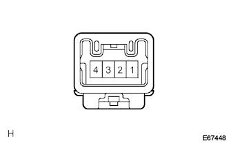
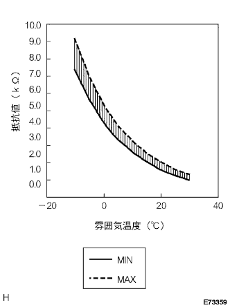

Cooler Thermista No.1 Single Inspection |
| 1. Cooler thermista No.1 inspection (A / C auto) |
|   |
Use SST (Toyota Electrical Tester) to measure the resistance value between the 2 terminals ← → 1 terminal ← → 3 terminals of the connector No.1 (ebapo after Eva) (after Eva).
| Temperature (° C) | Standard value (kΩ) |
|---|---|
| -10 | 7.40-9.20 |
| -5 | 5.65-7.00 |
| 0 | 4.35-5.40 |
| 5 | 3.40-4.20 |
| 10 | 2.68-3.30 |
| 15 | 2.10-2.60 |
| 20 | 1.66-2.10 |
| twenty five | 1.32-1.66 |
| 30 | 1.05-1.35 |
| 2. Cooler thermista No.1 inspection (A / C manual) |
Use SST (Toyota Electrical Tester) to inspect the resistance between connectors between terminals.
| Temperature (° C) | Standard value (kΩ) |
|---|---|
| -10 | 7.40-9.20 |
| -5 | 5.65-7.00 |
| 0 | 4.35-5.40 |
| 5 | 3.40-4.20 |
| 10 | 2.68-3.30 |
| 15 | 2.10-2.60 |
| 20 | 1.66-2.10 |
| twenty five | 1.32-1.66 |
| 30 | 1.05-1.35 |